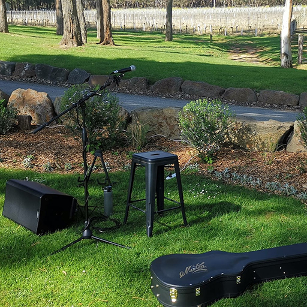

Stripped-back acoustic vibes with rich guitar tones and heartfelt vocals—ideal for intimate settings, ceremonies, and relaxed atmospheres.
Live guitar, dynamic vocals, and pro drum tracks—delivering the full energy of a band in a solo setup, easy to move
Raw and unplugged—authentic acoustic guitar and vocals that bring soulful energy to the streets, markets, and open-air spaces.